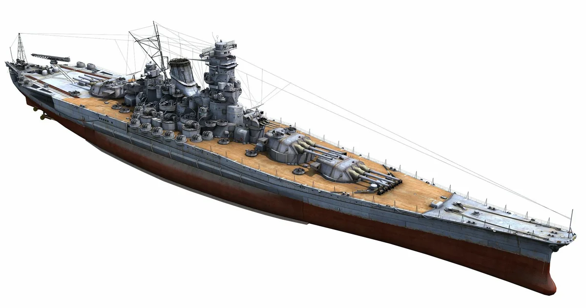
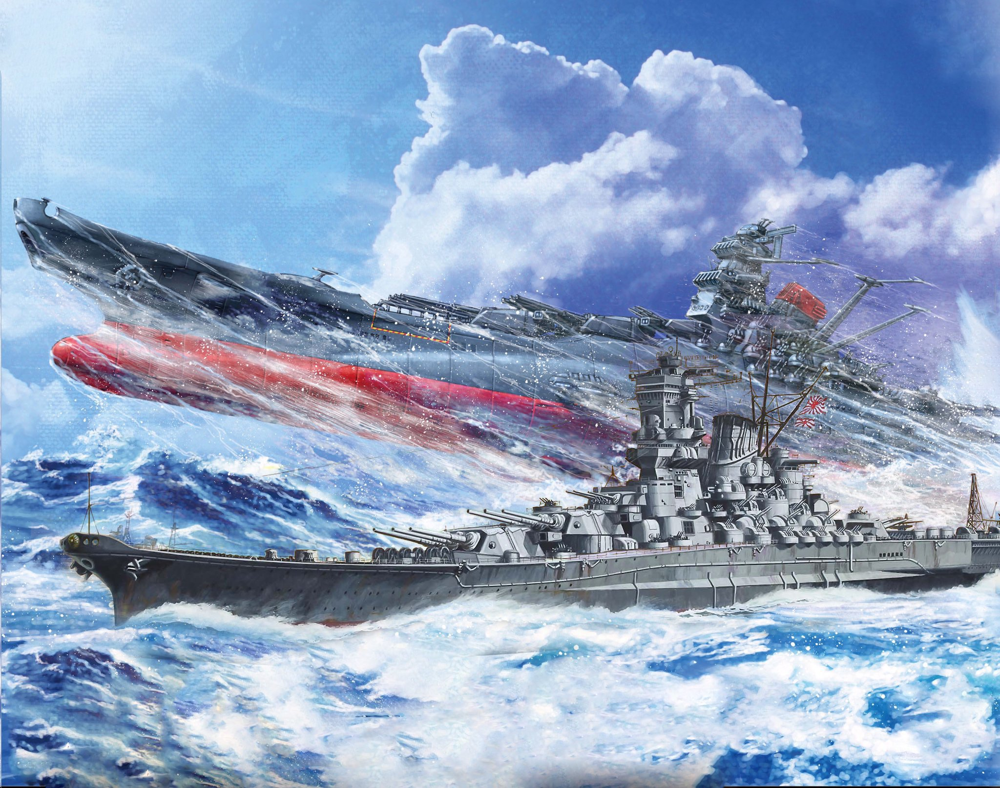
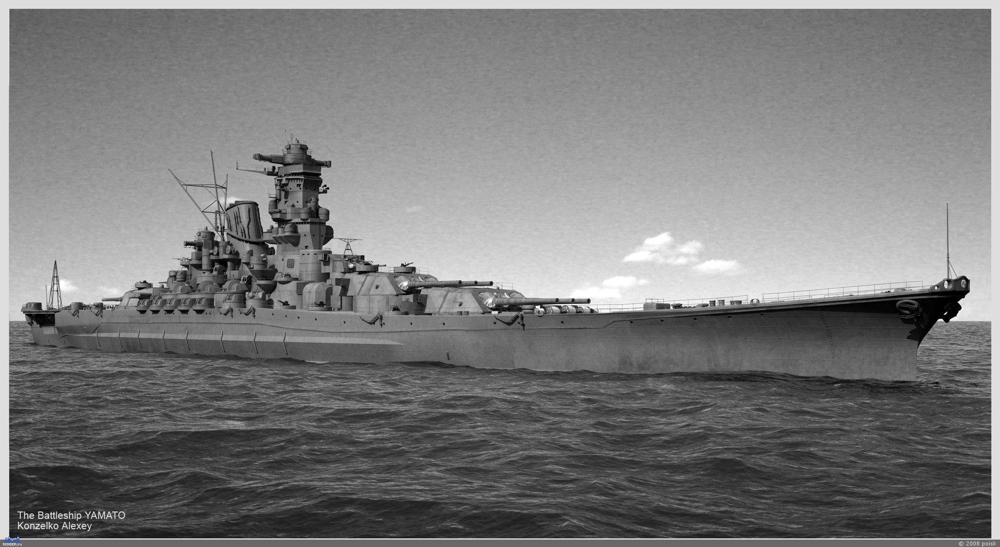
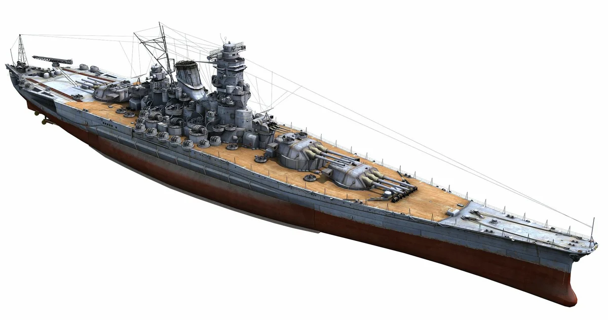
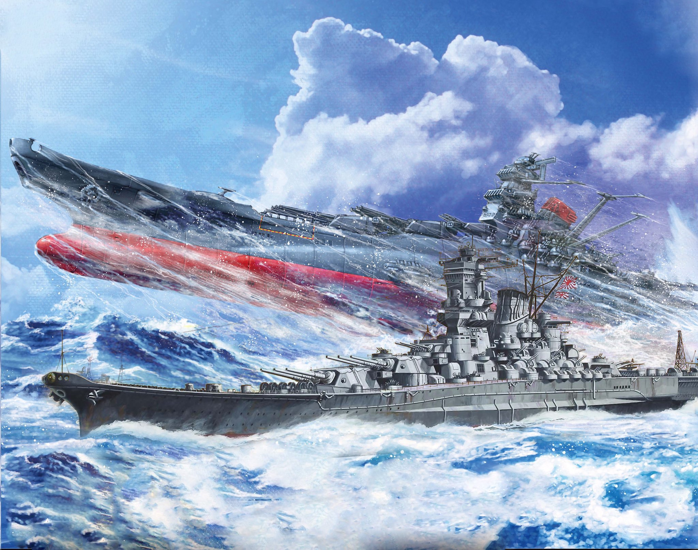
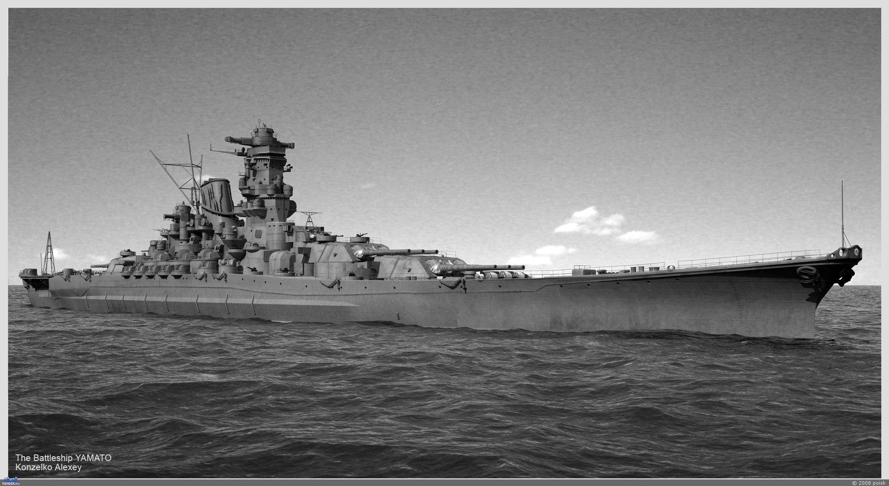

Линкор Yamato
«Ямато», первый из линкоров своей серии, был заложен 4 ноября 1937 года на верфи ВМС в Куре, префектура Хиросима. Он был спущен на воду 8 августа 1939 года, и официально вступил в строй 16 декабря 1941 года; однако, боеготовым корабль объявили лишь 27 мая 1942 года
В качестве флагмана Объединённого флота «Ямато» формально участвовал в сражении у атолла Мидуэй 4-6 июня 1942 года, но фактически не имел столкновений с противником, так как находился на 300 миль позади японских авианосцев. 28 мая 1942 года «Ямато» перебазировался на остров Трук, где провёл около года, выполняя роль плавучего штаба Объединённого флота. 25 декабря 1943 г. находившийся к северу от острова Трук «Ямато» получил попадание торпедой (масса заряда 270 кг) с американской подводной лодкой «Скейт» (Skate) и принял в пробоину около 3000 тонн воды. Боеспособность корабля серьёзно пострадала из-за затопления погреба кормовой башни главного калибра. В январе — апреле 1944 года «Ямато» прошёл ремонт и модернизацию в Куре.
В июне 1944 года «Ямато» принимал участие в сражении в Филиппинском море, причём соединение, включавшее также «Мусаси» и ряд других тяжёлых кораблей, действовало впереди своих авианосцев. 19 июня «Ямато» впервые открыл огонь в боевой обстановке, но позже выяснилось, что линкор обстрелял свою же авиацию.
Японское командование берегло свои линкоры для предполагаемого генерального сражения с американским флотом. Действительность опровергла эти расчеты — в реальности война на Тихом океане вылилась в череду небольших, но многочисленных изнурительных боев, в которых силы японского флота таяли, пока сильнейшие линкоры отстаивались вдали от зон активных боевых действий. В результате в Императорском флоте сложилось скептическое отношение к этим кораблям, хорошо иллюстрируемое популярной у моряков поговоркой: «На свете есть три самые большие и бесполезные вещи — египетские пирамиды, Великая китайская стена и линкор „Ямато“».
В октябре 1944 года японские суперлинкоры были наконец брошены в серьёзный бой. Американцы начали высадку на Филиппины, и в случае успеха операции могли разрушить японский оборонительный периметр и отрезать Японию от основных источников сырья и нефти. Ставка была слишком высока, и японское командование приняло решение о проведении генерального сражения. Составленный им план «Се-Го» («Победа») являлся незаурядным достижением оперативного искусства. Поскольку авианосные силы Императорского флота Японии были выбиты к тому времени в сражениях, главная роль отводилась крупным артиллерийским кораблям.
Северная группа, включавшая немногие уцелевшие авианосцы, должна была сыграть роль приманки для 38-го оперативного соединения — главной ударной силы американского флота. Основной удар по десантным судам должно было нанести 1-е диверсионное соединение вице-адмирала Куриты. В его состав входили 5 линкоров, включая «Ямато» и «Мусаси», 10 тяжёлых и 2 лёгких крейсера, 15 эсминцев. Соединение должно было ночью преодолеть пролив Сан-Бернардино и утром атаковать десантные суда у острова Лейте. Поддержку ему оказывало меньшее по силам 2-е диверсионное соединение вице-адмирала Нисимуры, следовавшее проливом Суригао.
 




